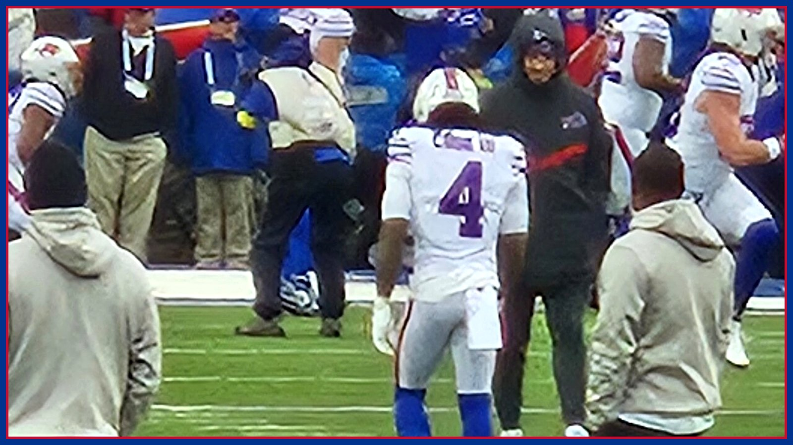

The James Cook number nobody is talking about: 5.34 yards a carry
Josh Allen gets the headlines, but Buffalo's offense runs on schedule because of one number: James Cook is averaging 5.34 yards per carry. These are the plays that make it real.

Every week, the national conversation about Buffalo starts and ends with Josh Allen. That's understandable — he's the franchise. But if you want to understand why this offense stays on schedule, why third downs stay manageable, and why Joe Brady can call a game without panic, start with a different number: 5.34. That's James Cook's yards-per-carry average this season, on 627 rushing yards, and it might be the most important stat on the team.
Start with what 5.34 does to a play sheet. A league-average first-down run leaves you second-and-six. Cook's average leaves Buffalo at second-and-five or better, and half the time it simply moves the chains or flips the field position battle entirely. When your early-down run game produces like that, the defensive coordinator across from you can never be right: stack the box and Allen beats you over the top; play coverage and Cook bleeds you four, six, nine yards at a time.
Watch the Ravens-week film from earlier this season and you'll see the pattern in his runs. Cook's gift isn't just speed — it's patience behind the zone scheme, one cut, and then vertical. He presses the hole long enough to move the second-level defender, and the moment that defender commits, the cut goes against his leverage. It's why so many of his carries that look like three-yard gains on contact turn into seven by the whistle.
The second layer is what Cook does to the passing game without touching the ball. Play-action only works when linebackers believe the run. With Cook averaging over five a carry, they have no choice — the first step is toward the line on nearly every fake, and that half-step is the window Allen throws into. Some of Buffalo's easiest completions this season start with a linebacker respecting Cook too much.
There's a workload point here too. 627 yards through six games is a real load, but Cook's efficiency means Buffalo isn't grinding him into dust to get production — he's not a 25-carry battering ram, he's a per-touch problem. Keeping him fresh into January is a quiet priority you can see in how Brady rotates the backfield on early downs.
Sunday against Baltimore, this is the matchup underneath the matchup. The Ravens will game-plan for Allen first — everybody does. If Cook gets his usual efficiency early, that plan collapses by the second quarter, and Buffalo controls the kind of game a 5-1 team should control at home.
The headline will say Allen versus Jackson. The film says the game tilts on whether Baltimore can make somebody other than No. 4 beat them — and right now, No. 4 is happily letting them try.
The BNC Blitz is free: the day's Bills news, one stat that matters, and one take, every morning. Join to keep reading — and never miss the end of a story again.